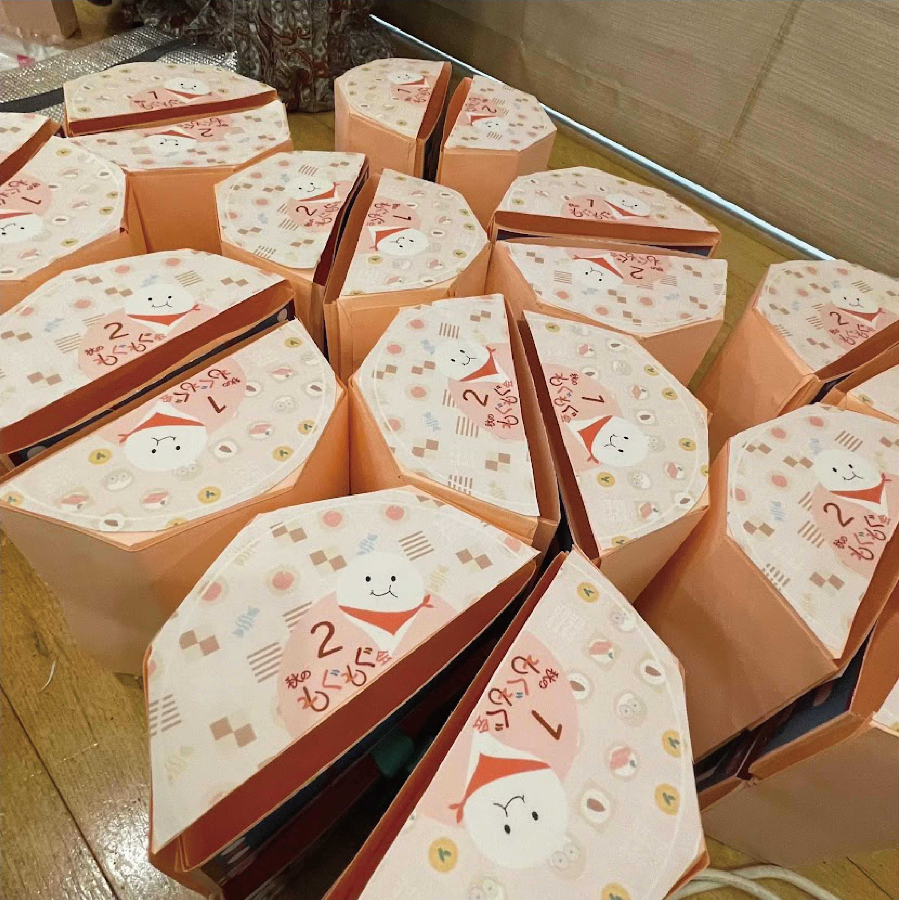
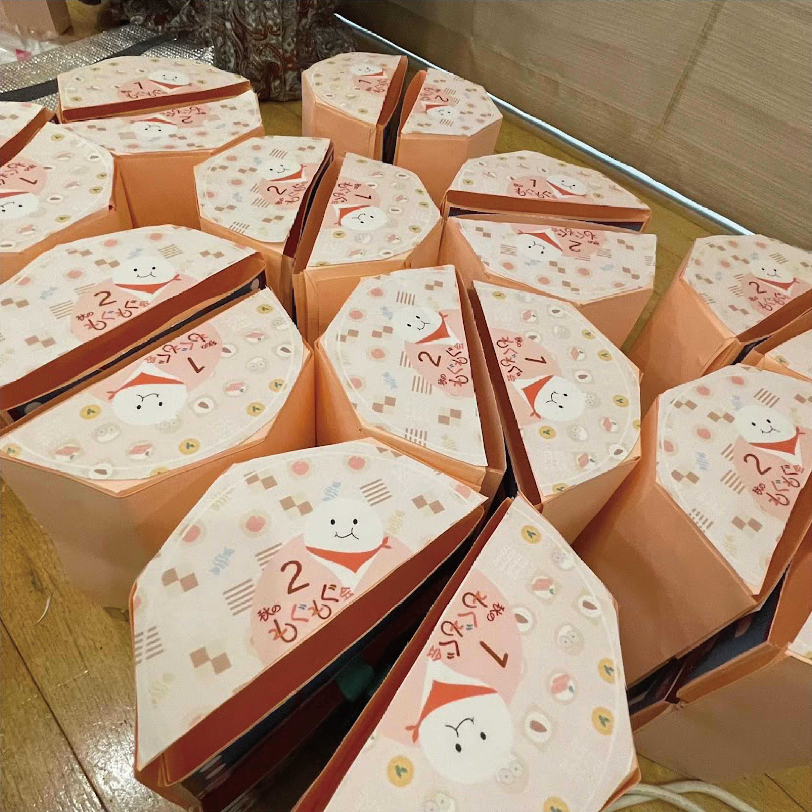
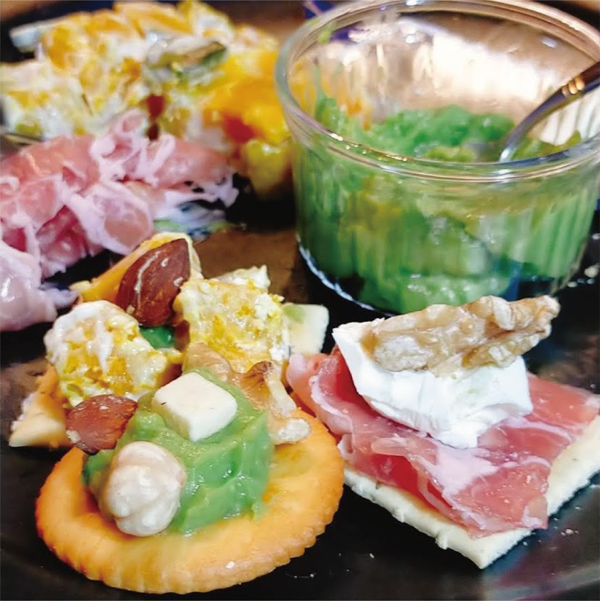
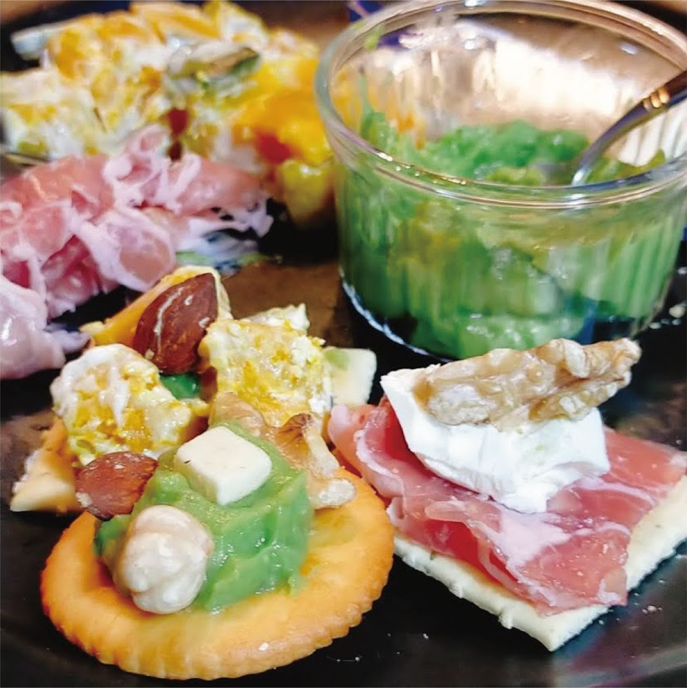

Mogumogu
2021
Illustrator / Photoshop

チーム作品「秋のもぐもぐ会の梱包制作」
・企画内容・
ハロウィンの時期、「コロナ禍でも皆で楽しくハロウィンパーティーをしたい!」というサークル内の皆の思いから始まった企画。コロナ禍であるためオンライン開催とし、参加者の各自宅に事前にお菓子を送り当日皆で食べながらお話をするという流れとなった。
・こだわりポイント・
最もこだわったポイントは梱包の形である。ハロウィンイベントということもあり視覚的にも楽しめる仕掛けをしたいと考えていた私たちはそれぞれのアイデアを出し合い、どのようにしたら家でも最高のハロウィンパーティーができるか話し合った。最終的に郵便の箱から出すとまるでカボチャのような形になる梱包を考え出した。
・制作過程・
梱包制作には主に画用紙を使用するという小学校の工作の授業のような形となった。梱包内には会当日に食べる食材を入れるため耐久力が足りないのではないか、との懸念があったが梱包の形を忠実に再現するためには画用紙が最も最適であった。以下の写真は必要な部品を記述したものと実際に100枚以上の画用紙に切り取り線を書こうとしている私と友達の様子である。

そして箱を参加人数分大量生産した。制作側の人数が圧倒的に足りず、制作室へ3、4日ほど通い詰め+終電ギリギリまで作業をしていたが皆で一丸となって同じ目標のもと作業をしていたためあまり疲れを感じないくらいとても楽しく作業をすることができた。
 


また、今回梱包係の中でもデザイン部分の制作の担当を分けて作業しており、私は郵送箱に貼る「秋のもぐもぐ会オリジナル」ステッカーと「要冷蔵品あり」ステッカーを制作した。

会当日、サークルメンバー30人ほどが集まりオンラインでハロウェンパーティーを楽しく行うことができた。そして、梱包に関しては皆から高評価をいただけ、「当日がより楽しみになった」との声をたくさんもらうことができた。チーム作業は意見をまとめたり、会議時間を合わせなければいけないなど1人よりも大変なことが多いように感じるが、全てが終わって完成した時の達成感は1人の時よりも大きく自分の中でとても楽しい思い出となった。

 
